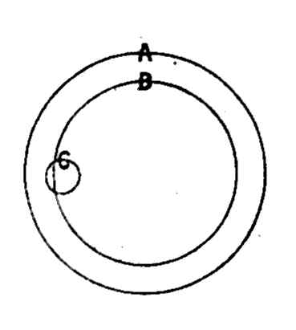

Chapter 3: Of Capital¶
3.1 § 1. Capital is Wealth Appropriated to Reproductive Employment¶
It has been seen in the preceding chapters that besides the primary and universal requisites of production, labor and natural agents, there is another requisite without which no productive operations beyond the rude and scanty beginnings of primitive industry are possible—namely, a stock, previously accumulated, of the products of former labor. This accumulated stock of the produce of labor is termed Capital. What capital does for production is, to afford the shelter, protection, tools, and materials which the work requires, and to feed and otherwise maintain the laborers during the process. These are the services which present labor requires from past, and from the produce of past, labor. Whatever things are destined for this use—destined to supply productive labor with these various prerequisites—are Capital.
Professor Fawcett, “Manual” (chap. ii), says: “Since the laborer must be fed by previously accumulated food, ... some of the results of past labor are required to be set aside to sustain the laborer while producing. The third requisite of production, therefore, is a fund reserved from consumption, and devoted to sustain those engaged in future production.... Capital is not confined to the food which feeds the laborers, but includes machinery, buildings, and, in fact, every product due to man's labor which can be applied to assist his industry” (chap. iv). General Walker (“Political Economy,” pages 68-70) defines capital as that portion of wealth (excluding unimproved land and natural agents) which is employed in the production of new forms of wealth. Henry George (“Progress and Poverty,” page 41) returns to Adam Smith's definition: “That part of a man's stock which he expects to yield him a revenue is called his capital.” Cherbuliez (“Précis,” page 70) points out the increasing interdependence of industrial operations as society increases in wealth, and that there is not a single industry which does not demand the use of products obtained by previous labor. “These auxiliary products accumulated with a view to the production to which they are subservient” form what is called capital. Carey (“Social Science,” iii, page 48) regards as capital all things which in any way form the machinery by which society obtains wealth. Roscher's definition is, “Every product laid by for purposes of further production.” (“Political Economy,” section 42.) By some, labor is regarded as capital.1
A manufacturer, for example, has one part of his capital in the form of buildings, fitted and destined for carrying on this branch of manufacture. Another part he has in the form of machinery. A third consists, if he be a spinner, of raw cotton, flax, or wool; if a weaver, of flaxen, woolen, silk, or cotton thread; and the like, according to the nature of the manufacture. Food and clothing for his operatives it is not the custom of the present age that he should directly provide; and few capitalists, except the producers of food or clothing, have any portion worth mentioning of their capital in that shape. Instead of this, each capitalist has money, which he pays to his work-people, and so enables them to supply themselves. What, then, is his capital? Precisely that part of his possessions, whatever it be, which he designs to employ in carrying on fresh production. It is of no consequence that a part, or even the whole of it, is in a form in which it can not directly supply the wants of laborers.
Care should be taken to distinguish between wealth, capital, and money. Capital may be succinctly defined as saved wealth devoted to reproduction, and the relations of the three terms mentioned may be illustrated by the following figure: The area of the circle, A, represents the wealth of a country; the area of the inscribed circle, B, the quantity out of the whole wealth which is saved and devoted to reproduction and called capital. But money is only one part of capital, as shown by the area of circle C. Wherefore, it can be plainly seen that not all capital, B, is money; that not all wealth, A, is capital, although all capital is necessarily wealth as included within it. It is not always understood that money is merely a convenient article by which other forms of wealth are exchanged against each other, and that a man may have capital without ever having any actual money in his possession. In times of commercial depression, that which is capital to-day may not to-morrow satisfy any desires (i.e., not be in demand), and so for the time it may, so to speak, drop entirely out of our circles above. For the moment, not having an exchange value, it can not be wealth, and so can the less be capital.

Suppose, for instance, that the capitalist is a hardware manufacturer, and that his stock in trade, over and above his machinery, consists at present wholly in iron goods. Iron goods can not feed laborers. Nevertheless, by a mere change of the destination of the iron goods, he can cause laborers to be fed. Suppose that [the capitalist changed into wages what he had before spent] in buying plate and jewels; and, in order to render the effect perceptible, let us suppose that the change takes place on a considerable scale, and that a large sum is diverted from buying plate and jewels to employing productive laborers, whom we shall suppose to have been previously, like the Irish peasantry, only half employed and half fed. The laborers, on receiving their increased wages, will not lay them out in plate and jewels, but in food. There is not, however, additional food in the country; nor any unproductive laborers or animals, as in the former case, whose food is set free for productive purposes. Food will therefore be imported if possible; if not possible, the laborers will remain for a season on their short allowance: but the consequence of this change in the demand for commodities, occasioned by the change in the expenditure of capitalists from unproductive to productive, is that next year more food will be produced, and less plate and jewelry. So that again, without having had anything to do with the food of the laborers directly, the conversion by individuals of a portion of their property, no matter of what sort, from an unproductive destination to a productive, has had the effect of causing more food to be appropriated to the consumption of productive laborers. The distinction, then, between Capital and Not-capital, does not lie in the kind of commodities, but in the mind of the capitalist—in his will to employ them for one purpose rather than another; and all property, however ill adapted in itself for the use of laborers, is a part of capital, so soon as it, or the value to be received from it, is set apart for productive reinvestment.
3.2 § 2. More Capital Devoted to Production than Actually Employed in it¶
As whatever of the produce of the country is devoted to production is capital, so, conversely, the whole of the capital of the country is devoted to production. This second proposition, however, must be taken with some limitations and explanations. (1) A fund may be seeking for productive employment, and find none adapted to the inclinations of its possessor: it then is capital still, but unemployed capital. (2) Or the stock may consist of unsold goods, not susceptible of direct application to productive uses, and not, at the moment, marketable: these, until sold, are in the condition of unemployed capital.
This is not an important distinction. The goods are doubtless marketable at some price, if offered low enough. If no one wants them, then, by definition, they are not wealth so long as that condition exists.
(3) [Or] suppose that the Government lays a tax on the production in one of its earlier stages, as, for instance, by taxing the material. The manufacturer has to advance the tax, before commencing the manufacture, and is therefore under a necessity of having a larger accumulated fund than is required for, or is actually employed in, the production which he carries on. He must have a larger capital to maintain the same quantity of productive labor; or (what is equivalent) with a given capital he maintains less labor. (4) For another example: a farmer may enter on his farm at such a time of the year that he may be required to pay one, two, or even three quarters' rent before obtaining any return from the produce. This, therefore, must be paid out of his capital.
(5) Finally, that large portion of the productive capital of a country which is employed in paying the wages and salaries of laborers, evidently is not, all of it, strictly and indispensably necessary for production. As much of it as exceeds the actual necessaries of life and health (an excess which in the case of skilled laborers is usually considerable) is not expended in supporting labor, but in remunerating it, and the laborers could wait for this part of their remuneration until the production is completed.
The previous accumulation of commodities requisite for production must inevitably be large enough to cover necessaries, but need not be more, if the laborer is willing to wait for the additional amount of his wages (the amount of his unproductive consumption) until the completion of the industrial operation. In fact, however, the accumulation must be sufficient to pay the laborer all his wages from week to week, by force of custom (wherever there is any considerable division of labor), and also sufficient to purchase tools and materials. The various elements of capital are materials, instruments, and subsistence, giving “instruments” its wide signification which includes money (the tool of exchange), and other necessary appliances of each special kind of production.
In truth, it is only after an abundant capital had already been accumulated that the practice of paying in advance any remuneration of labor beyond a bare subsistence could possibly have arisen: since whatever is so paid is not really applied to production, but to the unproductive consumption of productive laborers, indicating a fund for production sufficiently ample to admit of habitually diverting a part of it to a mere convenience.
It will be observed that I have assumed that the laborers are always subsisted from capital:2 and this is obviously the fact, though the capital need not necessarily be furnished by a person called a capitalist.
The peasant does not subsist this year on the produce of this year's harvest, but on that of the last. The artisan is not living on the proceeds of the work he has in hand, but on those of work previously executed and disposed of. Each is supported by a small capital of his own, which he periodically replaces from the produce of his labor. The large capitalist is, in like manner, maintained from funds provided in advance.
3.3 § 3. Examination of Cases Illustrative of the Idea of Capital¶
That which is virtually capital to the individual is or is not capital to the nation, according as the fund which by the supposition he has not dissipated has or has not been dissipated by somebody else.
Let the reader consider, in the four following suppositions, whether or not the given capital has wholly dropped out of the circle in the diagram, page 67. In (3) and (4) the wealth is entirely dissipated; as it can not longer be in circle A, it can not, of course, be in circle B.
(1.) For example, let property of the value of ten thousand pounds, belonging to A, be lent to B, a farmer or manufacturer, and employed profitably in B's occupation. It is as much capital as if it belonged to B. A is really a farmer or manufacturer, not personally, but in respect of his property. Capital worth ten thousand pounds is employed in production—in maintaining laborers and providing tools and materials—which capital belongs to A, while B takes the trouble of employing it, and receives for his remuneration the difference between the profit which it yields and the interest he pays to A. This is the simplest case.
(2.) Suppose next that A's ten thousand pounds, instead of being lent to B, are lent on mortgage to C, a landed proprietor, by whom they are employed in improving the productive powers of his estate, by fencing, draining, road-making, or permanent manures. This is productive employment. The ten thousand pounds are sunk, but not dissipated. They yield a permanent return; the land now affords an increase of produce, sufficient in a few years, if the outlay has been judicious, to replace the amount, and in time to multiply it manifold. Here, then, is a value of ten thousand pounds, employed in increasing the produce of the country. This constitutes a capital, for which C, if he lets his land, receives the returns in the nominal form of increased rent; and the mortgage entitles A to receive from these returns, in the shape of interest, such annual sum as has been agreed on.
(3.) Suppose, however, that C, the borrowing landlord, is a spendthrift, who burdens his land not to increase his fortune but to squander it, expending the amount in equipages and entertainments. In a year or two it is dissipated, and without return. A is as rich as before; he has no longer his ten thousand pounds, but he has a lien on the land, which he could still sell for that amount. C, however, is ten thousand pounds poorer than formerly; and nobody is richer. It may be said that those are richer who have made profit out of the money while it was being spent. No doubt if C lost it by gaming, or was cheated of it by his servants, that is a mere transfer, not a destruction, and those who have gained the amount may employ it productively. But if C has received the fair value for his expenditure in articles of subsistence or luxury, which he has consumed on himself, or by means of his servants or guests, these articles have ceased to exist, and nothing has been produced to replace them: while if the same sum had been employed in farming or manufacturing, the consumption which would have taken place would have been more than balanced at the end of the year by new products, created by the labor of those who would in that case have been the consumers. By C's prodigality, that which would have been consumed with a return is consumed without return. C's tradesmen may have made a profit during the process; but, if the capital had been expended productively, an equivalent profit would have been made by builders, fencers, tool-makers, and the tradespeople who supply the consumption of the laboring-classes; while, at the expiration of the time (to say nothing of an increase), C would have had the ten thousand pounds or its value replaced to him, which now he has not. There is, therefore, on the general result, a difference, to the disadvantage of the community, of at least ten thousand pounds, being the amount of C's unproductive expenditure. To A, the difference is not material, since his income is secured to him, and while the security is good, and the market rate of interest the same, he can always sell the mortgage at its original value. To A, therefore, the lien of ten thousand pounds on C's estate is virtually a capital of that amount; but is it so in reference to the community? It is not. A had a capital of ten thousand pounds, but this has been extinguished—dissipated and destroyed by C's prodigality. A now receives his income, not from the produce of his capital, but from some other source of income belonging to C, probably from the rent of his land, that is, from payments made to him by farmers out of the produce of their capital.
(4.) Let us now vary the hypothesis still further, and suppose that the money is borrowed, not by a landlord, but by the state. A lends his capital to Government to carry on a war: he buys from the state what are called government securities; that is, obligations on the Government to pay a certain annual income. If the Government employed the money in making a railroad, this might be a productive employment, and A's property would still be used as capital; but since it is employed in war, that is, in the pay of officers and soldiers who produce nothing, and in destroying a quantity of gunpowder and bullets without return, the Government is in the situation of C, the spendthrift landlord, and A's ten thousand pounds are so much national capital which once existed, but exists no longer—virtually thrown into the sea, as wealth or production is concerned; though for other reasons the employment of it may have been justifiable. A's subsequent income is derived, not from the produce of his own capital, but from taxes drawn from the produce of the remaining capital of the community; to whom his capital is not yielding any return, to indemnify them for the payment; it is all lost and gone, and what he now possesses is a claim on the returns to other people's capital and industry.
The breach in the capital of the country was made when the Government spent A's money: whereby a value of ten thousand pounds was withdrawn or withheld from productive employment, placed in the fund for unproductive consumption, and destroyed without equivalent.
The United States had borrowed in the late civil war, by August 31, 1865, $2,845,907,626; and, to June 30, 1881, the Government had paid in interest on its bonds, “from taxes drawn from the produce of the remaining capital,” $1,270,596,784, as an income to bondholders. From this can be seen the enormous waste of wealth to the United States during the war, and consequently the less existing capital to-day in this country; since, under the same inducements to save, the smaller the outside circle (wealth), the less the inside circle (capital) must be.
-
See Roscher's note 1, section 42, for various definitions of capital. ↩
-
General Walker (“Political Economy,” Part II, Chap. iv) adopts the same position, although seemingly inconsistent with his doctrine on the rate of wages. The “rate of wages” is, however, a different thing from the source of a laborer's subsistence. See Book II, Chapter II, § 2. ↩